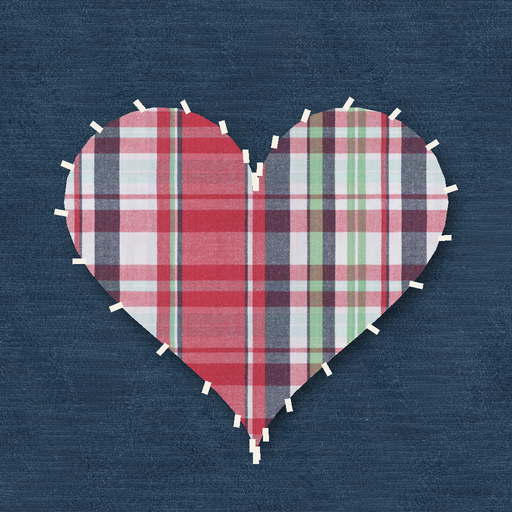

<- all projects

Mend and Make
PC
Volume
Live
Every torn coat has a story. Patch it. Stitch it. Give it back.
Dona Amélia ran the little repair stall in Lisbon's covered market for forty-one years, and now the key is yours. People bring the clothes that matter to them, and each job is a hole to fill exactly with fabric patch pieces, turning them to fit and leaving out spares that do not belong. Then trace the chalk line to stitch it and hear why the piece matters. 100 repairs over five seasons, thirty regular customers and one grey wool coat with notes in the lining that go back to 1974.